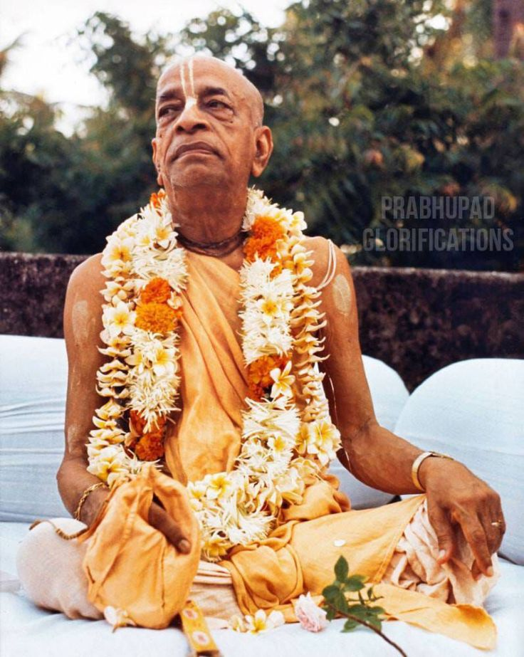

Ideal Sannyasi
Posted on : 26th October, 2024

Yadubara Dasa : I had a number of memorable incidents when I filmed Srila Prabhupada. One was on the roof of the apartments on our land in Juhu before the temple was built. Prabhupada would speak there in the twilight hours. One time the local eight, nine, and ten-year-old girls got dressed up and went to the roof to garland Prabhupada and do a dance for him. I filmed both the garlanding and the dancing. Later, when I was editing that film, I noticed that Prabhupada didn't look at the girls. He had his hand in his bead bag, and he would look down and over and up but never at the girls. In this way he showed the example of an ideal sannyasi.
Ref- Memories-Anecdotes of modern days saint by siddhanta dasa.